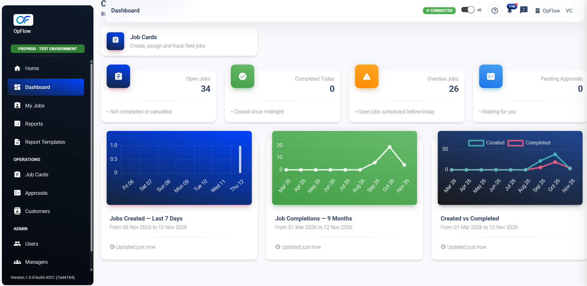
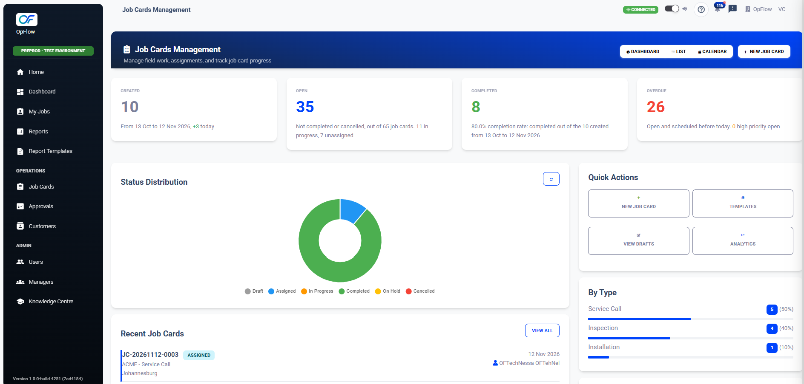
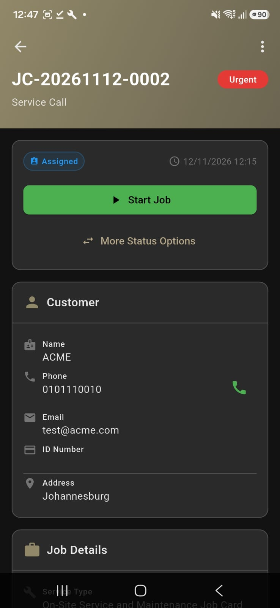
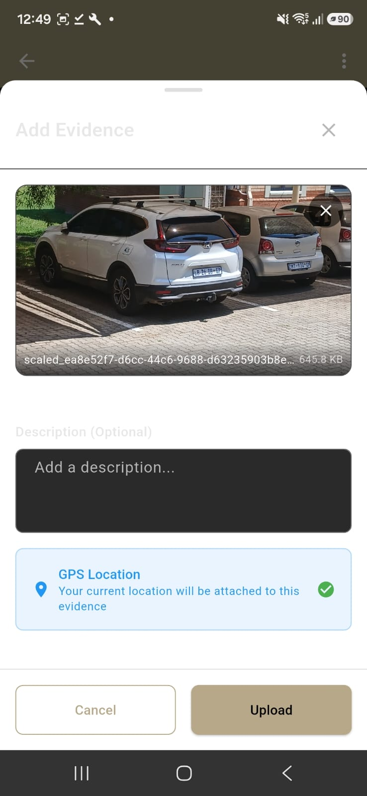
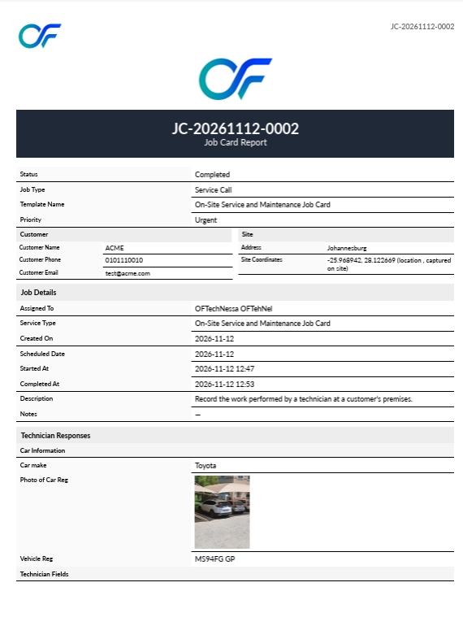

Utilities & metering
Prove every reading, visit and site location for your client.
Operational work management
OpFlow gives field teams one clear way to create, assign, complete and prove the work that keeps your business moving.

Why OpFlow
When jobs live across spreadsheets, messages, paper and separate systems, managers lose the full picture. Teams repeat work. Evidence gets lost. Invoices wait.
OpFlow connects the office and the field in one practical workflow, so the right people know what is happening and every completed job leaves a clear record.
See the workflowFor managers
Create and assign work, see what is open or overdue, and keep approvals, reports and customer history close at hand.



For technicians
Technicians see the job, the customer and the work required on their phone. Required fields guide the visit, while photos, GPS and signatures capture the evidence as it happens.
Proof that travels with the job
When work is complete, the report is ready. Customer details, technician responses, photos, signatures, location and status history stay together for the people who need them.

REPORTHow it works
Choose a template, customer and technician.
The technician sees exactly what is required.
Record fields, photos, location and signatures on site.
A complete report is ready when the job closes.
Built around your work
Whether your teams are measuring, installing, maintaining or responding, OpFlow gives every job a consistent path from assignment to evidence.
Prove every reading, visit and site location for your client.
Capture installation details, photos and sign-off on site.
Know what was done at every customer before the vehicle leaves.
See it with your work
In a 30-minute demonstration, we will show how your work can move from assignment to a completed report in OpFlow.